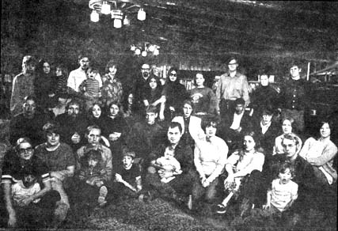
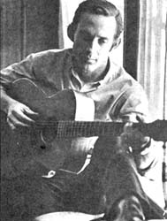
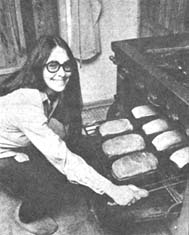

Reprinted from MID-SOUTH MAGAZINE, The Memphis Commercial Appeal
The commune is beside a stream called Big Piney, in the hush of worn Arkansas mountains and fully five hours from the pace and pavement of Memphis. It is a place without address, unless you count the one assigned to it by the wife of the county sheriff. The commune is at "Four Two Plumb," says Mrs. Walter Looper. "It's over four hills, through two gates and plumb out in the damn sticks."
And so it is. To reach the commune, you drive down a rocky, packed-clay road five miles from Lamar, in Johnson County. You cross a long, complaining bridge of railroad ties and then turn into Big Piney Guest Ranch.
Preconceived notions suggested by the word "commune" lead you to expect long-hair youths in outlandish costumes, rebels who argue without reason, weaklings with drugs and sexualists without propriety.
But you are met by a neatly dressed woman, full-bodied and olive-complexioned, with a curly haired child at her hand. She walks to the car and greets you with . . .
A smile.
I t is a smile that a Puerto Rican hair-stylist, dulled by her family's status struggle from the Bronx to Long Island, might have given her brother. Such is the case with Lyn Alvarez. She is 23, she joined the commune six months ago and now she grants her smile to strangers.
"Dixon Bowles, our leader, is not here now," she says. "He'll be back soon. His brother, Clayton, is here."
She stands near a large, log lodge. Nearby are two house trailers. Down by the river are four cabins and off in the distance, beyond a foot-bridge over a rivulet, is a barn converted to living quarters.
Clayton Bowles, who is 24, is wearing insulated overalls and a day's growth of beard. He leads the way to one of the trailers, the mass-produced residence of his brother.
"There are no drugs or sexual promiscuity here," he says. "Beyond that, we'll discuss anything."
As he outlines the history of the venture-its pragmatic beginning and philosophical evolution, the tragedies which have visited it-you decide that these young people might represent the precedent to the current phenomenon of the commune.
Not that they are really a part of that phenomenon, the groping out of hippiness which began in the second half of the 60s, after Haight became hateful. They were, instead, before that and through it and still in business-pleading hope for the future, invoking the dream of Utopia and earning their daily bread in common ways.
It is an unproven idea in this country, a radical idea without the harshness radicalism usually supposes. It is, in a word, a gamble, and the odds are not good. Those at Big Piney have accepted the gamble without pretention. In fact, they strive for simplicity. They call themselves . . .
The Group.
S everal of the women have settled on the couches in the lodge, where most commune activities take place. They are watching a TV soap opera, and apologize for it. Bread is baking in the kitchen. Down the center of the room are cased books: Erich Fromm's "Escape From Freedom," "Hurry Sundown" by K.B. Gilden, Zen and all else of Eastern philosophy, Readers Digest condensed novels, "Great Operas," a trigonometry textbook, "Reading for Rhetoric," "Great Ideas of Psychology" and at least nine Bibles. There is even a book called "Shooting and Hunting."
One of the women is Mrs. Diane Eudy, 24-years-old, big with child and rolling cigarets so that all may cheaply enjoy what is referred to as "our single vice." She is from Odessa, Texas, one of the 12 original members still in the commune. Odessa is where it all started seven years ago.
"Dick-yes, I call Dixon, Dick-organized a singing group and I was in it," she says. "We sang folk and spiritual, footstomping music. My husband, Ed, and I were both in the original group and we went to Odessa Junior College, as did most of the others."
Dixon Bowles, a guitarist, started putting the singing group together in 1964. In 1966, they sang for Dan Blocker, the 'Hoss' of television's Bonanza, during one of his appearances at Odessa Junior College, where he had studied. He liked them and, although he did not give them financial backing, he allowed them to use his name. And so, later that year, they went to Hollywood on a chartered bus in search of fame as the Dan Blocker Singers.
There were 18 of them and they had $1,800 . They rented a house and lived together because it was economical and because some of the members were underage and Dixon had promised their parents they would be strictly supervised. The Los Angeles Times discovered them and announced in a headline: "Commune of 18 Singers Lives Under Benevolent Dictator." Dixon Bowles continues in that role. In matters important and unimportant, his decision is final. His position is autocratic and, while discussion is encouraged, democracy is given short shrift. He is known to one and all as . . .
Our Leader
T he door of the lodge opens and several young men enter. The shortest is a blondish, of wiry build and with the mien of junior executives. It came as no surprise later to learn that he was an honor student, runnerup for Mr. Odessa Junior College and disc jockey for the school radio station. You know the type, disciplined and bound to succeed, the sort who would tackle show business and end up with dates on the Milton Berle Show and playing a Reno saloon-which he did with the Dan Blocker Singers.
"THERE ARE NO DRUGS AND NO PROMISCUITY,
BEYOND THAT, WE'LL DISCUSS ANYTHING."
"I'm glad you could come," says Dixon Bowles, extending a hand. "We'll eat in a little while and I hope you'll stay
"How did we happen to come to Arkansas? It's really very simple. After we had been together in California, the idea of the commune-of living together and getting along-began to mean more than show business.
"One day, we saw a classified ad telling about the Big Piney Guest Ranch. We went by to see the man and then came out here to see it."
In 1968, after signing a lease for $400 a month, The Group moved to Arkansas. They took whatever jobs they could find. They worked as farm laborers, in a local pants factory and continued to do some singing. During the Arkansas gubernatorial contest, segments of The Group provided entertainment for Winthrop Rockefeller rallies. For a time, they operated a restaurant at the ranch, but that was not profitable.
Local people did not know what to think of them. Shortly after they moved in, local toughs paid them a visit, breaking windows and defiling the lodge porch.
Mrs. Looper, the sheriff's wife, recalled the incident and the fact that after they sobered up, the trouble-makers-at the insistence of her husband-went by and apologized.
"It's a different way of living, and out in the country some people just can't accept anything different," Mrs. Looper says.
At first, there were rumors of drugs at the commune, and of a marijuana patch. But the sheriff investigated and found them not to be true. Mrs. Looper says that when The Group was running the restaurant, she and her husband and other couples went there several times. She said some of the patrons were disappointed to find that liquor was not allowed.
People still wonder about Big Piney. Even the commune's closest neighbor, Mrs. Katie Birkhahn, a half-mile up the road in a neat frame house, wonders.
"When they first came, we had more fun than Carter's got oats," she says. "But they kept coming, one right after the other. Oh, we're still friends.
"Some say they're communists, but I don't know anything about that. When I broke my arm, they came and set up with me. Not many folks will do that for you. They gave me a dog (a white German shepherd). It's name is Clayton. They don't believe in the Bible the way we do, but they haven't harmed anybody.
"Have you seen those girls down there? Some of them are beautiful. Why would they want to live like that? Are they married? I understand Dixon divorced his wife and is living with another woman? What about the children? I don't know what to think about it. And that's the truth." T he questions Mrs. Birkhahn asks are more provocative than the answers they beget.
The total strength of the commune is 60 adults. However, some of them have gone to St. Louis, because of a shortage of jobs in Arkansas, to earn money for The Group and to work in a church poverty project. Others are preparing to follow.
While we were at Big Piney, there were 48 adults-12 married couples, 12 single men and 12 single women. There were 10 children and three of the women were expecting.
Dixon Bowles tires of discussing the lodging arrangements at Big Piney.
"If we ever leave here," he says, "I'm going to buy a full page ad in the local paper and show them our sleeping arrangements. Since we've been here, there haven't been any arrests and no illegitimate births."
Single men and women have separate quarters and married couples live together. The rooms are, for the most part, small and nondescript.
"This past summer, we got a lot of visitors from other communes. They came here expecting to find a crash pad. They'd take one look at me and say something like, 'Man, you drip of authority,' and leave."
His own marital status is voluntarily explained. When he came to Arkansas, his wife was Tina, a pretty, black-haired girl he had known since Odessa. They were divorced and he married a bubbly blonde named Norma. They all are still in The Group.
"I understand you were asking about my divorce from Dixon," says Tina, midway in a conversation about the kindergarten program she oversees. (Visual aides and Montessori teaching methods are used extensively.) "I don't mind talking about it. There was no point in continuing our marriage. Dixon and I are still friends."
vTina, who is second-in-command-of the commune, Dixon and members of The Group share concern for the future. At year's end, it was much more promising than now. Then they were preparing to manage a state-owned lodge on nearby Mount Magazine. They had purchased 400 acres of ground, also on Mount Magazine, and architects were drawing plans for buildings. And then came what Dixon Bowles refers to as . . .
The Double Whammy
T he group had all its financial eggs in the Mount Magazine basket. On Feb. 2, the $275,000 lodge burned to the ground. And then, three days later, five of The Group were killed in a wreck while on their way back from Winrock Farms, where they had jobs.
"IT'S NOT SOMETHING FOR EVERYONE. BUT WE HAVE BEEN SUCCESSFUL IN CREATING A MICROSCOPIC SOCIAL STRUCTURE WHICH ANSWERS THE NEEDS OF MANY PEOPLE . . . ESPECIALLY A LOT OF YOUNG PEOPLE."
The wreck left four widows-including Tina, who had married Angus McMaster only a month before. Also killed were Loren Norman, Sinon Tanjy, Tony O'Neil and Harold Jackson. Critically injured was a Memphian, 27-year-old Michael Alsup.
"These two things left us on the edge," says Dixon. They also tested both the financial and psychological strength of The Group. Judging from comments of some of the members, Group unity is in better condition than Group finances.
"I never could have made it after my husband was killed unless it had been for the help I got from the rest of The Group," says Mrs. Mary Jackson. "I never was a real stable person before."
Generalizations about members of The Group are difficult to make. After it has been said that most are in their early 20s and that most have some college education, few broad statements can be made. Capsule sketches of some of the members may help.
Mary Jackson and her sister, Mrs. Trish Peper, are from Minneapolis, the daughters of a county prosecutor.
"Trish came first," says Mary. "I was living in Dallas and I heard from my father that Trish had moved to Arkansas and was living with a religious group. To me, it meant long-haired hippies, LSD and pot. I came for a visit. When I got here, I found they didn't even look like hippies. It surprised me to find them functioning as a unit.
"When Trish joined, my father said, 'Well, we'd expect her to do it.' When I joined, he said, 'What?' He's visited and he was glad to find out there was no hanky panky and that I was being materially cared for."
One of the few beards in The Group is worn by Leslie Singer, formerly the drummer with a rock band called "The Unspoken Word," which came to Big Piney to write songs for a record album.
"I had gone to school with Paul Rossby (who heads the St. Louis project) and he told me the people here were good and that the vibrations were high," Leslie says. "We picked up and came on down from New York," leaving behind a life he described as "lower-middle-class, Jewish-Long-Island."
Sid Eudy is 22, one of three brothers in The Group. His twin, Stan, and his older brother, 24-year-old Ed, also are members. Their father is a police captain in Odessa and their mother is a secretary.
"I was in the original group," Sid says. "My father remains against it. My mother accepts it. My father feels its a cop-out. His philosophy is that you don't do what you want to, but what you have to do. If he taught me anything, it was to be happy, and I can't seem to convince him that I'm happy."
The stories go on. One girl had ridden with a motorcycle gang. Several had had experience with drugs. "If I hadn't left home, my father would have kicked me out," says one girl.
And all speak of the "philosophy" of The Group. The "philosophy" is difficult to define, differently stated by each. But when the rhetoric is put aside and one word is sought to describe it, the one that seems most fitting is . . .
Christianity
T hat judgment probably would draw disagreement from some of The Group. "It is perfect love," says one. "Our philosophy is an amalgamation of what is in all philosophies; there is truth in all of them," says another. "It is absolute Christianity," says a third.
When a person joins The Group, his assets become those of the commune. If he has any debts, the commune agrees to pay them. Those who work contribute their entire salaries. When pickings are thin, as they have been recently, all suffer at the same table. "Chicken today and feathers tomorrow," says one after struggling through a lumpy serving of chicken and dumplings.
"It is a matter of total sharing," says Mrs. Donna Stashuk. She is 25 and says she had a "totally pain-free" upbringing in a Catholic, middle-class New Jersey family. "It's very hard to describe living here without sounding like you are living in a fantasy."
Dixon Bowles says the commune should not be considered so much an argument as "an alternative." "It is not something for everyone. But we have been successful in creating a microscopic social structure which answers the needs of many people, especially a lot of young people. We're sufficiently dropout to be acceptable and sufficiently establishment to be constructive."
Most of those in The Group have had their parents visit them. One of those parents is John Alsup of Memphis, the father of Michael Alsup, who was injured in the accident. Mr. Alsup is a troubleshooter for the telephone company and owner of Pop-I's Record Room at 543 South Highland.
"I wouldn't care for that type of life myself," he says. "But it's been good for Mike. Before, he never seemed to care for anything or anybody. Now he has compassion and feeling for other people. I'm happy he's there."
I n the commune, there is even room for doubts. Diane Eudy, for instance, sometimes thinks about what it would be like to have a three-bedroom, bath-and-a-half house in the suburbs.
"But then I think about the land project and about what we are trying to do with The Group, about how we are trying to make something better.
"We want this to last. We've thought about what would happen if something would happen to Dixon. But you have to understand that this is not just his idea. It's something we all want. Someone else could take over and we would go on.
"And now let me ask you something. What do you think of what we're doing here?"
|
 ONE MEMBER'S DEBTS ARE THE DEBTS OF ALL AND EVERYONE WORKS FOR THE COMMON BREAD IN THIS ARKANSAS COMMUNE. |
 ABOVE: Dixon Bowles, the Leader of The Group. |
 BELOW: Karen Hershman, a commune member from Memphis, tends the group oven. The Group bakes about a dozen loaves of bread each day. |